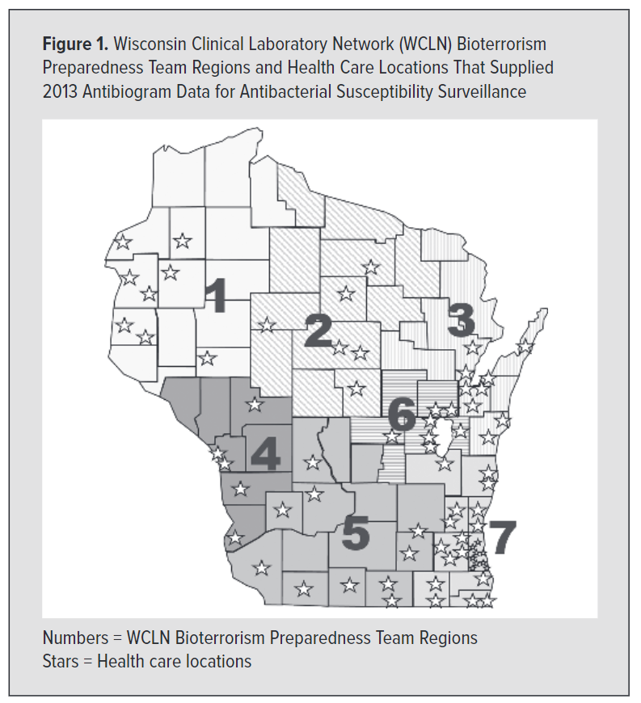

This interactive visualization was created by Natalee Desotell as a practicum project for the UW-Madison GIS & Web Map Programming MS program. This map was created using Carto Engine, Leaflet, and copious amounts of caffeine. The choropleth colors are from Colorbrewer, and the icons were created in Adobe Illustrator.
THE DATA
The data were provided by Erik Munson, Ph.D., D(ABMM). This map is based on 2009, 2013, and 2015 E. Coli susceptibility data from across Wisconsin. These data were aggregated to the county level. Then, a weighted average percentage susceptible was calculated based on the number of isolates tested in each lab.
To maintain patient privacy, 2009 and 2013 data are aggregated to the Wisconsin Clinical Laboratory Network's seven Bioterrorism Preparedness Team Regions. The choice to aggregate to these regions is based on original research by Erik Munson, Ph.D., D(ABMM) et al.

THANKS
This project would not have been possible without the help of many people. Most notably, Laurel Legenza came up with the idea to visualize antimicrobial resistance data in Wisconsin. She is leading the project under the mentorship of Warren Rose and Susanne Barnett, associate professors (CHS) in the Pharmacy Practice Division at the UW-Madison School of Pharmacy.
Professor Robert Roth was instrumental in conceptualizing the initial design of the map.
Guidance from the Wisconsin State Cartographer's Office helped bring this idea to fruition -- a big thanks goes out to Jim Lacy, Codie See, and Andrea Eibergen.